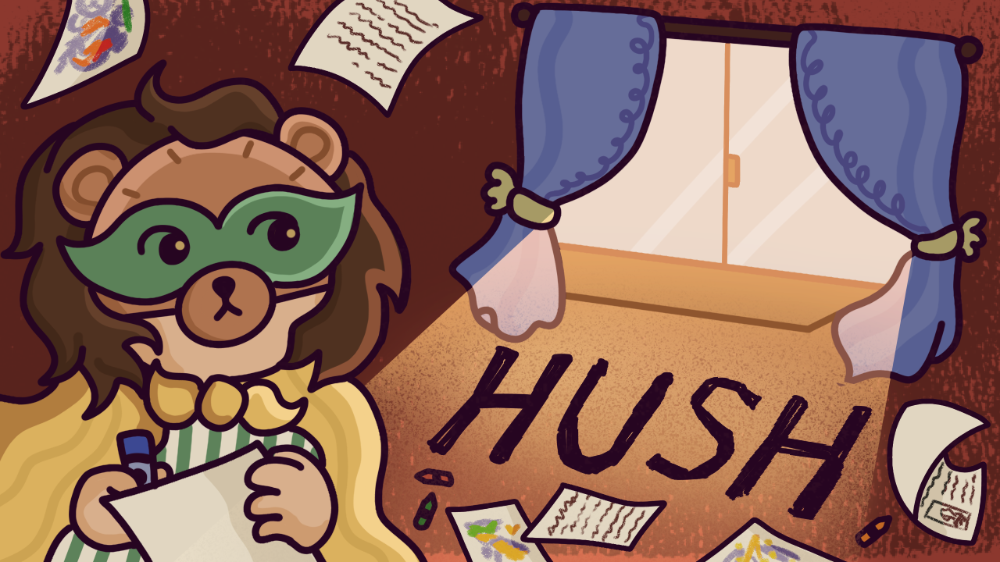

echoes

Catch exotic fish and fight comical sea-monsters as you chase after The One That Got Away in this fishing-centric boss rush!
Bait & Tackle is a 2D, fishing-themed boss rush, built using Godot and C#. I served as the boss designer & primary gameplay designer, as well as a gameplay programmer. Development of the bosses included communicating with playtesters, iterating based on feedback, and implementing unique attacks and mechanics for each boss fight.
Bait & Tackle has been published, and is available for free on Steam here: Bait & Tackle Steam Page